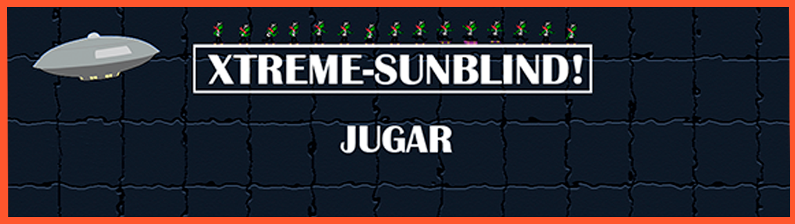

Xtreme-SunBlind!
Este videojuego ha sido programado en JavaScrip y Phaser.
Te pondrás en la piel de un extraterrestre que ha escapado de su planeta para destruir La Tierra. Todo su planeta intentará pararlo, pero no es algo que le importe demasiado...
Altamente recomendado jugarlo cuando no tienes nada que hacer.
¿Cómo instalarlo?
¡No tienes que descargar ni instalar nada! ¡Simplemente haz click en este link!